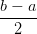

8.3 Ordem de precisão
Considere o problema de valor inicial dado por

 , y(tn), com erro da ordem de O(hp+1), ou
seja,
, y(tn), com erro da ordem de O(hp+1), ou
seja,
 | (8.8) |
para cada função analítica f, dizemos que o método tem erro de truncamento da ordem de O(hp) ou ordem de precisão p. Essa afirmação faz sentido quando fazemos a seguinte análise informal: para aproximar y1, acumulamos erros da ordem O(hp+1), para calcular y 2 acumulamos os erros de y1 e novos erros O(hp+1). Para calcular y N, acumulamos todos os erros até tN, ou seja, N vezes O(hp+1). Como N = O(1∕h), temos que os erros ao calcular y N são da ordem O(hp). É verdade que essa análise só vale quando impomos condições de suavidade para f e condições adequada para a expressão F(f,h,y(tn),y(tn−1),,y0). Para explicar melhor esse pequeno texto, fazemos em detalhes essa operação para o método de Euler na seção 8.3.1.
8.3.1 Ordem de precisão do Método de Euler
Primeiro lembramos da expressão (8.4) que origina a seguinte relação de recorrência:
Para entender melhor o motivo de na expressão (8.9) aparecer O(h2) e o método ser de precisão 1, vamos a seguinte análise informal: observemos que


8.3.2 Ordem de precisão do Método de Euler Melhorado
Para obter o erro de precisão do método de Euler Melhorado vamos calcular o erro de truncamento do método, ou seja, precisamos demonstrar que:
|
| (8.11) |
De fato, tomando a diferença do termo da esquerda o os termos da direita, temos:


- IME - UFRGS